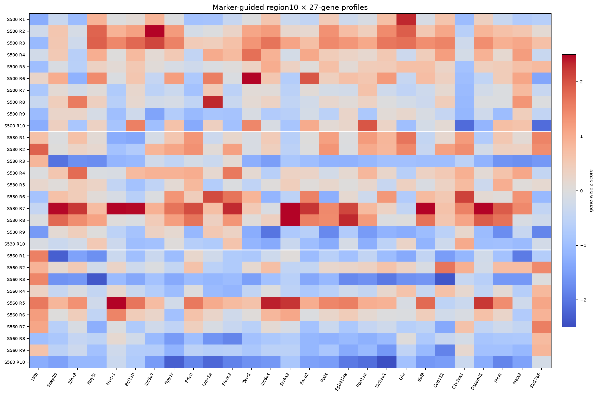
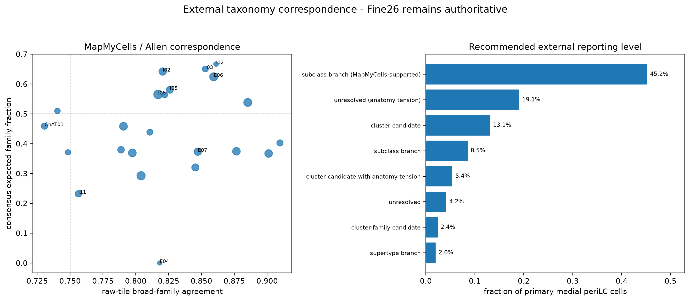
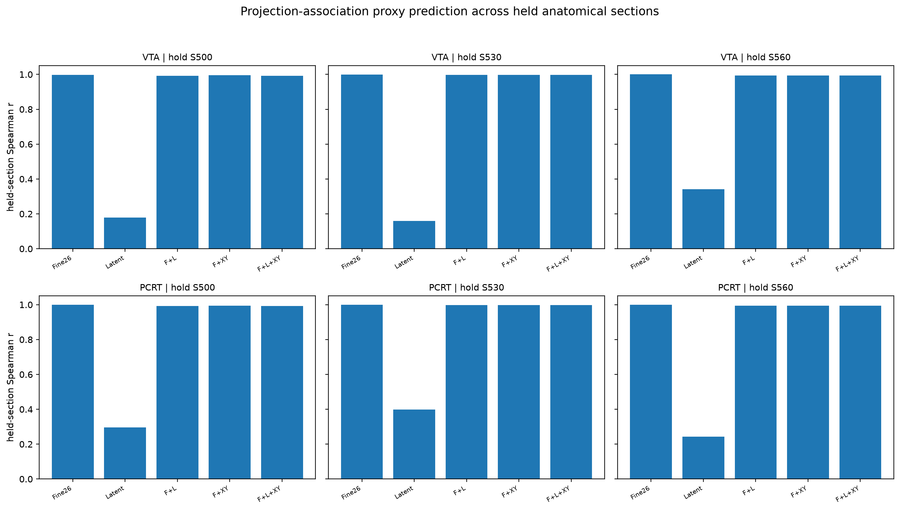
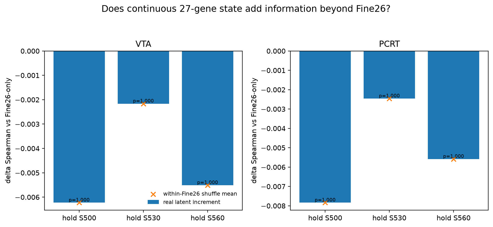

Fine26 UMAP — current Stage943

71,950 cells in the frozen Fine26 state space.
Stage943 expression · frozen Fine26 identities · Stage950–952 current integration
Fine26 remains frozen. Current analyses use Stage943 counts to test molecular structure and section transfer without re-clustering for versioning.
71,950 cells in the frozen Fine26 state space.

Marker structure under the current expression authority.
Leave-one-section-out transfer quantifies how transportable the frozen identities are.

Gene-level structure in the same current molecular state space.
One high-information local field is retained for each section so the global atlas remains connected to individual-cell 27-gene profiles.
Representative single-cell views use the downseg-derived segmentation body rather than only cell-center points.

Physical X/Z with flipped-Y; mask-body samples preserve true segmentation geometry.


Region numbers are local to each section and are never treated as homologous across S500/S530/S560. The question is how spatial organization adds information beyond frozen Fine26 identity.

Observed-vs-expected enrichment within each section.

Segmentation geometry and local 10-NN density summarized within section.

Weighted eta² asks how much region10 still explains after cell identity is held fixed.

Current marker-guided region profiles from the final spatial atlas.
Allen / MapMyCells remains a secondary correspondence layer. It can support or weaken an interpretation but does not redefine Fine26.

Only 4 Fine26 populations are joint-strong anchors; median expected-family consensus is limited, so this remains confidence-limited context.
The first held-section latent test used Stage629/631 VTA/PCRT delta_soft values. Those values are Fine26-level composition shifts mapped back to cells, so Fine26 nearly perfectly predicts them by construction. They are not an independent functional endpoint.

Fine26-only R² is approximately 0.996–1.000 because the proxy is defined at the Fine26 composition level.

No positive latent increment survives; this result is retained as a circularity warning, not functional evidence.
delta_soft_VTA/PCRT as an independent endpoint. The next valid bridge must use independent projection labels, neural recordings, perturbation response, or behavior.Stage950 · Stage951 · Stage952 · region10×Fine26 table · within-Fine26 modulation